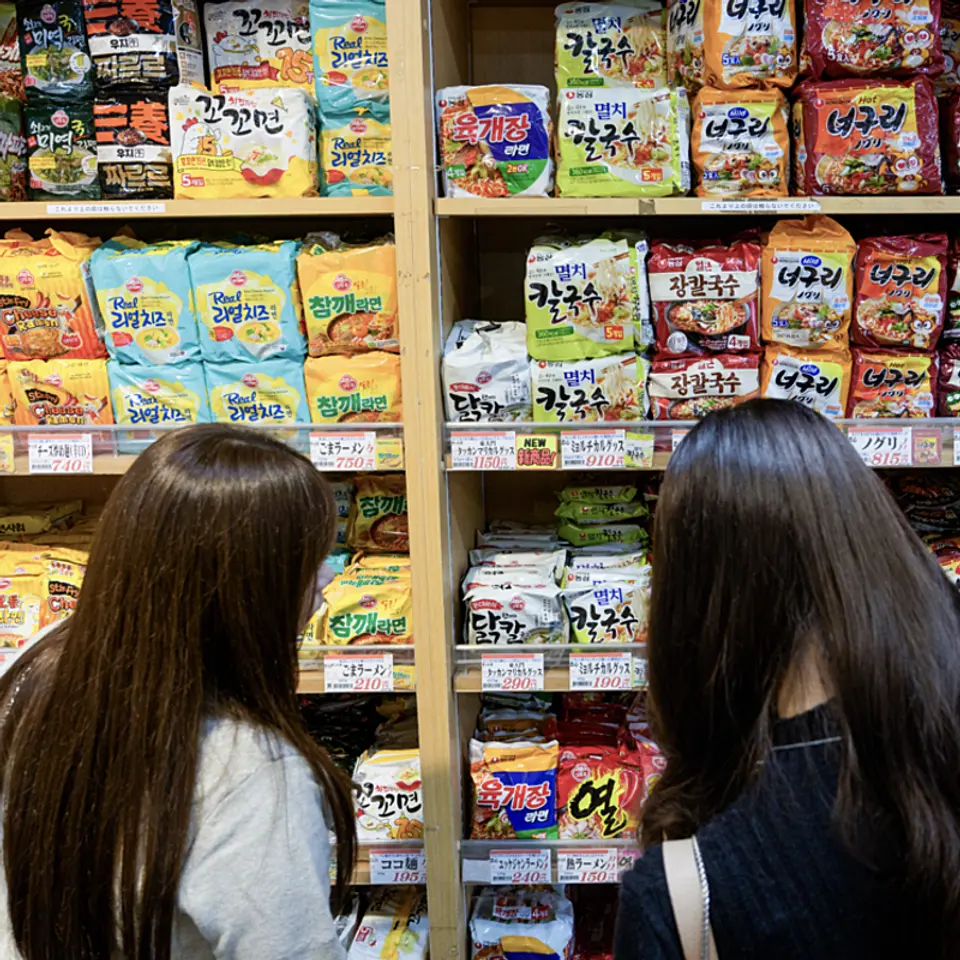
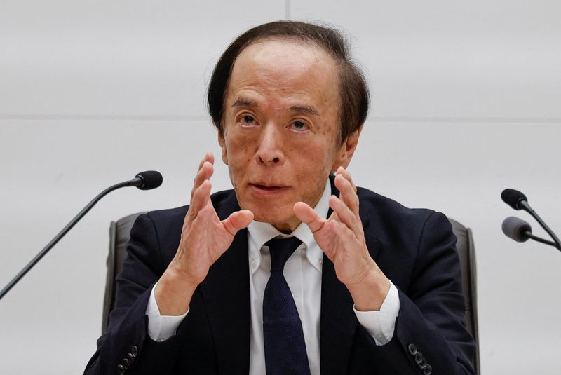

【全記録】30代でがんに。パパ３人が託した「最後の絵本」
発行日時：2026-11-07 05:30:00 JST
NewsPicks原文を読む
あなたに関係ありそうな理由
病気の治療と家族生活が重なる中で、人と人が支え合う姿を考えられます。
概要
がんを患う3人の父親が構想から5年半かけて作った絵本『どこだ？パパ びょういんってどんなところ？』が、2026年8月末に刊行された。治療を受ける父と病院ではぐれた子どもが、院内を探しながら病院のさまざまな場所や働く人を知る絵本だ。3人のうち2人は完成前に亡くなり、残った清水佳佑さんが仲間の思いを引き継いだ。
3人が知り合ったのは、子どもを持つがん患者のオンラインコミュニティ「キャンサーペアレンツ」だった。滋賀の清水さん、新潟の古澤創さん、神奈川の関直行さんは、それぞれ異なるがんの治療を受けながら仕事や子育てを続けていた。2021年2月、父親の目線から絵本を作ろうとプロジェクトを始め、月に一度、夜にオンラインで集まった。打ち合わせでは絵本の話に限らず、治療の副作用や家族、仕事の話が深夜まで続くこともあった。
2022年1月、古澤さんが亡くなり、活動は半年ほど止まった。清水さんと関さんが再開後に選んだのは、子どもと絵の中の人物を探して遊ぶことを大切にしていた古澤さんも推していた案だった。2023年にイラストレーターのサタケシュンスケさんへの依頼が実現し、病院の見学などを経て、動物の患者を含む約700のキャラクターが描かれた。
出版社探しでは複数社に断られたが、ゆまに書房が手を挙げた。編集で探し絵の答え合わせや設備・職種の解説を加え、冒頭には父親ががんになったことも明記した。2026年2月に商業出版が決まったものの、翌月、関さんも亡くなった。関さんは亡くなる4日前、清水さんに完成を託すメッセージを送っていた。清水さん自身も再発によって入院中だった。
完成後の9月、清水さんは古澤さんの自宅を訪ね、仏壇に本を供えた。プロジェクトは全国468カ所のがん診療連携拠点病院などへの寄贈を目指し、約200万円の協賛を募っている。表示コメントでは福本勲氏が仲間や家族に意思が引き継がれたことに触れ、清水勝彦氏は生きる意味を問いかける記事だと受け止めた。病気と暮らしが重なる中で、一冊の本を周囲の人々と作り上げた経緯が伝わる。
出版前には、古澤さんの妻に作者として名前を載せる許可を手紙で求めた。妻はその後、広報にも加わり、刊行記念の場で読み聞かせをした。
仕事や会話で使える一言
一冊の本が、人から人へ託された思いをつなぎました。
【NYT】日本の最新「若者言葉」の意外な起源
発行日時：2026-11-07 05:30:01 JST
NewsPicks原文を読む

あなたに関係ありそうな理由
身近な流行の背景にある文化交流と歴史を知る手がかりになります。
概要
日本の若者の間で、日本語の会話に韓国語を混ぜる「ハンボノ」が広がっている。米ニューヨーク・タイムズの記事は、K-POPや韓国ドラマなどを通じた文化交流と、日韓の言葉を巡る歴史をたどり、この変化を紹介する。
東京・新宿では韓国語のラベルが付いた日本製のインスタントラーメンが売られ、広告にも韓国語が登場する。記事に登場するK-POPファンの大学生は、「本当に」を意味する「チンチャ」や「ごめん」を意味する「ミアネ」などを日常会話に交ぜるという。SNSで流行している言葉を、韓国について詳しく知らなくても使うことがあると話した。
ハンボノは韓国語を意味する「ハングゴ」と日本語を意味する「イルボノ」を組み合わせた造語だ。サイバー韓国外国語大学の佐々紘子教授は、日本では特にK-POPファンが韓国語の単語をそのまま受け入れて使うと説明する。動きが目に見えて加速したのは2018年で、記事はBTSのアルバム発売やBLACKPINKの日本公演があった年だと記す。専門家によればコロナ禍にも韓国文化に触れる日本人が増え、親しみを込めて年上の人を呼ぶ「ヒョン」「オンニ」などが広く使われ始めた。
記事は言葉を取り巻く歴史にも触れる。日本の植民地支配下では朝鮮語の公的な使用が制限され、学校の教科書や法的文書に日本語が使われた。1942年には朝鮮語の研究・普及に関わった学者が逮捕された朝鮮語学会事件も起きた。1945年の解放後、韓国では言語の標準化や読み書きの回復が進められ、後に国語基本法や海外への韓国語教育機関も整備された。
日本で育った韓国系のイ・サンチョルさんは、高校時代には韓国語の単語が仲間内の「秘密のスラング」だったと振り返る。現在の若者が国籍で線を引かず文化を受け入れる様子を、前向きな変化として見ている。一方、記事もハンボノが日本社会全体に根付いたとは言えないと記す。
表示コメントでは佐藤元則氏が、記事中の「ヒョン」「オンニ」に対応する日本語がないとの記述に疑問を示した。田井明子氏は文化交流の楽しさと歴史の双方に目を向けたいと述べた。流行する言葉の意味を楽しむと同時に、その背景や記事の説明を確かめる視点も得られる。
仕事や会話で使える一言
言葉の流行を楽しみながら、その背景にも目を向けたいですね。
ハーバード大生でも超過酷な講義 なぜ大人気なのか
発行日時：2026-11-07 05:20:00 JST
NewsPicks原文を読む
あなたに関係ありそうな理由
仕事や学びの場で、読み考え、他者と議論する時間の価値を考えられます。
概要
ハーバード大学の人文学基礎講座「Humanities 10」、通称Hum10に新入生の応募が集まっている。毎週分厚い本を読み、定期的に小論文を書く負担の大きい授業だが、今秋は応募者が40％増え、定員90人に180人が応募した。米ウォール・ストリート・ジャーナルの記事は、学生と教授の声から人気の理由を探る。
講義では電子機器が禁止され、毎回出欠を取る。最低基準を満たせば成績に影響しない合否だけの評価を選ぶこともできない。読書の範囲は「オデュッセイア」から始まり、シェイクスピアやプラトンなどを経てジョイスの「ユリシーズ」に至り、再び時代をさかのぼって「イリアス」で終わる。ある哲学の講義では、小説「エマ」を題材に、主人公をどう理解するか、そもそもなぜ小説を読むのかが問いかけられた。
学生たちは、自分だけなら読まない古典に取り組み、散漫になりがちな注意力に抗いたいと語る。AIに本の要約を任せればよいと言われたことに違和感を示す学生もいた。履修者の一人は、授業で得られるものの多くは人間の経験であり、AIからは得られないと話す。これは個々の学生の見解であり、技術の価値を一律に否定する結論ではない。
講座は2008年、英文学者のスティーブン・グリーンブラット氏とルイ・メナンド氏が、人文学への関心の低下に対抗しようと構想した。現在は複数分野の教授が交代で講義し、それぞれ週1回のゼミも担当する。教授たちは他の講義にも出席し、自分の専門外で初めて読む本についても学生と議論する。教員にとっても学び直す場になっている。
グリーンブラット氏のゼミは、美術館でその週の課題に関連する作品を学生が選ぶところから始まる。記事は、学生同士が異論を示しながら活発に議論する様子を伝えた。卒業生は、課題を読まずに参加して仲間を失望させたくなかったと振り返り、皆で何かを築いている感覚があったと話す。
表示コメントで倉田浩美氏は自分で考え、異論にも耳を傾ける経験を評価した。講義の人気が示すのは、効率だけでなく、時間をかけて読み、他者と考えを交わす学びを求める学生がいるという事実だ。教授自身も専門の外に出る設計が、その場を支えている。
仕事や会話で使える一言
時間をかけて読み、異なる意見と向き合う場には価値がありますね。
基調インフレに上振れリスク、2％定着目指す＝日銀総裁
発行日時：2026-11-07 02:36:50 JST
NewsPicks原文を読む

あなたに関係ありそうな理由
物価や金利に関わる日銀の見方を、今後の生活や事業の判断材料にできます。
概要
日銀の植田和男総裁は11月6日、国際通貨基金（IMF）のイベントで、日本の基調的なインフレ率は2％の物価安定目標付近で推移すると見込む一方、一定の上振れリスクがあるとの認識を示した。ロイターの記事は、物価見通しに加え、金融政策の手段やAIの影響についての発言を伝えている。
総裁は、エネルギー関連製品の値上がりが消費者物価に影響し始めており、物価上昇率が翌年初めにかけてさらに加速する可能性があると述べた。賃金上昇率はインフレ率と整合的な水準にあるとの見方も示したうえで、日銀の現在の目標は基調的なインフレ率を2％付近に安定して定着させることだと説明した。ただし、2％目標は日本の社会規範としてまだ定着していないとも述べている。
海外の中央銀行の政策については、それぞれが自国経済をどう見ているかを示す情報であり、日本経済にも影響するため、行動を注意深く見守っているとした。各国の政策を単独の出来事としてではなく、日本に及ぶ影響も含めて見ていることが分かる。
非伝統的な金融政策にも言及した。日銀が過去に導入した際には一定の効果があった一方、プラス金利圏からの通常の利下げを完全に代替するものではなかったと説明。将来のショックの深刻さによっては再び非伝統的な手段が必要になる可能性もあるが、その場合は市場機能への影響など副作用をできる限り抑える方法を考える必要があると述べた。これは再導入を決めたという発表ではない。
中央銀行の情報発信については、政策目標を市場に伝える必要と、市場参加者のモラルハザードを招くリスクとの均衡が必要だと指摘した。日本では基調的なインフレ率を政策判断の重要な指標として用いてきたと説明し、2％に達した現在はその水準を維持することが目標だと述べた。
AIについては、急速な進歩が日本の需要を押し上げた一方、供給面の影響も検討する必要があるとした。人手不足の日本では労働代替による恩恵の可能性がある反面、金融安定の観点では、小規模な銀行や企業のサイバー対策への懸念も挙げた。表示コメントで永濱利廣氏はAIブーム後退の影響を注視し、佐藤望氏は建設の見積もりや契約を考える材料とした。コメントはそれぞれの見解として読みたい。
仕事や会話で使える一言
物価の見通しと、日銀が取る政策の判断を併せて見たいですね。
米バークシャー、7－9月に自社株買いを拡大－営業利益は5.8%減
発行日時：2026-11-07 22:24:06 JST
NewsPicks原文を読む
あなたに関係ありそうな理由
投資と保険事業を併せ持つ企業の決算から、お金の使い道と収益の変化を見られます。
概要
米バークシャー・ハサウェイは2026年7〜9月に約96億ドル（約1兆5800億円）の自社株買いを実施した。一方、同期間の営業利益は127億ドルで前年同期比5.8％減となった。ブルームバーグの記事は、保険事業の利益減と、グレッグ・アベル最高経営責任者（CEO）の下で進む投資の変化を伝えている。
営業利益を押し下げたのは保険部門の引受利益だ。引受利益は前年同期から43％減少し、傘下の自動車保険会社GEICOでは保険金支払いなどが8.5％、引受費用が17％それぞれ増えた。保険部門の投資純利益も、主に短期金利の低下を受けて14％減の27億ドルになった。幅広い事業を持つ同社の決算を見るときには、利益全体だけでなく、保険の引き受けと運用のどちらに変化があったのかも確認する必要がある。
同社は1〜3月期に約1年ぶりとなる自社株買いを再開した。アベル氏は、経営陣が自社株の本源的価値を市場価格が下回ると判断したことを理由に挙げていた。株価は1〜9月に約1％下落し、比較対象としてしばしば使われるS&P500種株価指数に比べて低調だった。その後は上昇して最高値を更新し、今後も買い戻しを続けるかが焦点となっている。
自社株買いを進めても、9月末の現金保有額は前四半期から増え、3774億ドルとなった。7〜9月の株式取引は差し引き4億2600万ドルの売り越しだった。同社は保険のほか鉄道、エネルギー、製造業などを幅広く手掛けており、その業績は米経済の動向を映す指標としても注目される。
投資先では、グーグルの親会社アルファベットに100億ドル、AIを活用するイタリアの複合企業ベンディング・スプーンズに9億3000万ドルを投じた。記事は、テクノロジー株に慎重だったウォーレン・バフェット氏の路線からの変化として紹介する。データセンターへの反発や株式・債券市場の変動もある中で、新たな戦略がどう成果につながるかは今後の焦点だ。
表示コメントで太田勝久氏はGEICOの費用増を体質転換のための支出という観点から見ており、M. F.氏はAI投資と自社株買いに注目した。いずれもコメント者の見方であり、決算数字そのものとは区別して読みたい。
仕事や会話で使える一言
利益の増減と、現金や投資先の動きを併せて見たいですね。